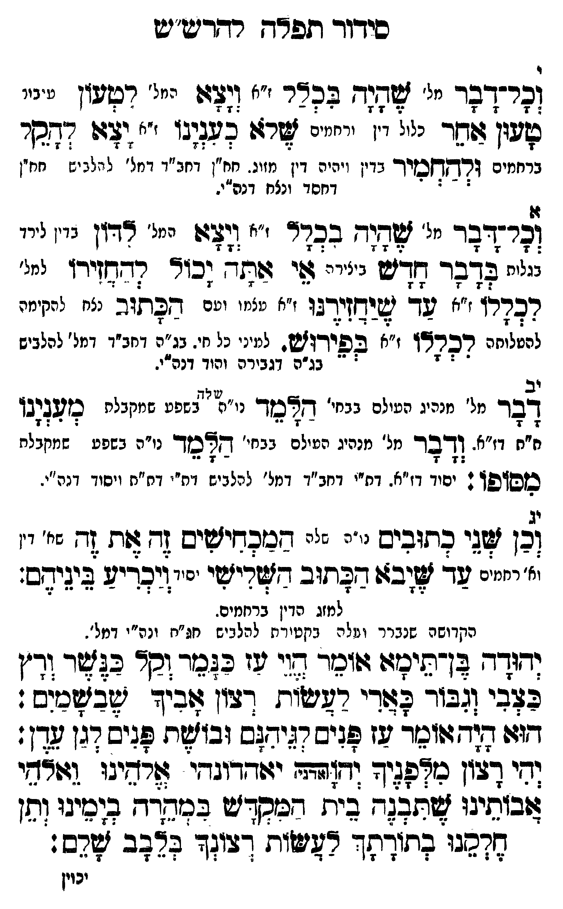

Neue Klartextfassung
י וכל דבר [מל'] שהיה בכלל [ז"א] ויצא [מל'] לטען [טיעון] טען אחר [כלו דין ורחמים] שלא כענינו [ז"א] יצא להקל [רחמים] ולהחמיר [בדין ויהיה דין מזוג. חו"ן דכחב"ד דמל' לכלים חו"ן דחסד ונצח דנה"י.] יא וכל דבר [מל'] שהיה בכלל [ז"א] ויצא [מל'] לדון [בדין לירד בגלות] בדבר חדש [ביהוד'] אי אתה יכול להחזירו [המל'] לכללו [ז"א] עד שיחזירנו [ז"א עצמו עם] הכתוב [נה"י דקדושה] לכללו [ז"א] בפירוש [ז"א]. [ולמעין כל חי. נו"ה דכחב"ד דמל' לכלים נו"ה דגבורה והוד דנה"י. [?]] יב דבר [מל' מנהיג העולם שבחי' דז"א נשפע שמקבלת] הלמד מענינו [מ"ם דז"א. ודבר מל' מנהיג העולם שבחי' שוה נשפע שמקבלת] הלמד מסופו [יסוד דז"א. דת"י דכחב"ד דמל' לכלים דת"י דת"ת ויסוד דנה"י. [?]]: יג וכן שני כתובים [נו"ה שהם] המכחישים זה את זה [זה שלי דין וזה רחמים] עד שיבא הכתוב השלישי [יסוד] ויכריע ביניהם: [למזוג הדין ברחמים. הקדושה שנברר ועלה בקטורת לכלים חג"ת וכ"י דמל'.] יהודה בן תימא אומר הוי עז כנמר וקל כנשר ורץ כצבי וגבור כארי לעשות רצון אביך שבשמים: הוא היה אומר עז פנים לגיהנם ובושת פנים לגן עדן: יהי רצון מלפניך יהוה (אדני) אלהינו ואלהי אבותינו שתבנה בית המקדש במהרה בימינו ותן חלקנו בתורתך לעשות רצונך בלבב שלם:
Original gegen neue OCR · Niqqud für Vergleich ausgeblendet
Original
י וכל דבר [מל'] שהיה בכלל [ז"א] ויצא [מל'] לטען [טיעון] טען אחר [כלו דין ורחמים] שלא כענינו [ז"א] יצא להקל [רחמים] ולהחמיר [בדיןK167-001 ויהיה דין מזוג. חו"ן דכחב"ד דמל' לכלים חו"ןK167-002 דחסד ונצח דנה"י.] יא וכל דבר [מל'] שהיה בכלל [ז"א] ויצא [מל'] לדון [בדיןK167-003 לירד בגלות] בדבר חדש [ביהוד'] אי אתה יכול להחזירו [המל'] לכללו [ז"א] עד שיחזירנו [ז"א עצמו עם] הכתוב [נה"י דקדושה] לכללו [ז"א] בפירוש [ז"א]. [ולמעיןK167-004 כל חי. נו"ה דכחב"דK167-005 דמל' לכלים נו"ה דגבורהK167-006 והוד דנה"י. ] יב דבר [מל' מנהיג העולם שבחי' דז"א נשפע שמקבלת] הלמד מענינו [מ"ם דז"א. ודברK167-007 מל' מנהיג העולם שבחי' שוה נשפע שמקבלת] הלמד מסופו [יסודK167-008 דז"א. דת"י דכחב"דK167-009 דמל' לכליםK167-010 דת"י דת"ת ויסודK167-011 דנה"י. ]: יג וכן שני כתובים [נו"ה שהם] המכחישים זה את זה [זה שלי דין וזה רחמים] עד שיבא הכתוב השלישי [יסוד] ויכריע ביניהם: [למזוגK167-012 הדין ברחמים.K167-013 הקדושה שנברר ועלה בקטורת לכלים חג"ת וכ"י דמל'.] יהודה בן תימא אומר הוי עז כנמר וקל כנשר ורץK167-014 כצבי וגבור כארי לעשות רצון אביך שבשמים: הוא היה אומר עזK167-015 פנים לגיהנם ובושת פנים לגן עדן: יהי רצון מלפניך יהוה (אדני) אלהינו ואלהי אבותינו שתבנה בית המקדש במהרה בימינו ותן חלקנו בתורתך לעשות רצונך בלבב שלם:K167-016
OCR · fehlbar
סידוך תפר"ך רדדישע"יש פרדנר יי זמ- בכך ' (זצגז "' ליי. "י' פעון צזשר נזיל וי. ירחייים שר: כפגןגו ולש דחסר ברחמים ורך חסזיך בדיןK167-001 ויהיה דין מזוג. חח"ן דחב"ד דנזל' ל ולב יע חנזין 4 - : -K167-002 דחסד ונצח דנה"י. צרגדבר מל' אד( בבדד ז"א 33 המל' "דזן בדיןK167-003 לירד ליח לדבד ח"ם ללל צי ז(ת- גכוץ רדגז[ידץז למל' רכרתו ז"א עך יאיח[ירגו ז"א טצמ ו ועם נכתוב נצח להקימה (גאנזנ רברצ' "א בפירוש. למיניK167-004 כל חי. בג"ה דחב"ךK167-005 דמל' להלביש - 3 1 ל בנ"ה דגבירהK167-006 והוד דנה"י. לבךK167-007 מל' מנהיג העילם בבחי' דצבזך נ": יצשפפ שמקבלת עויעצובז ז"] וז"א. בד מל' מנהיג נני: בבחי' דצמזך נו"ה בשפע שמ(צלח כזס"פן ' כץK167-008 דז"א. דת"י דחב"דK167-009 דמל' ננננ.]K167-010 דת"י דח"ת ויסוךK167-011 דנה"י. בן ד חיבים - -- חנכחיישיב [- זת (- '. יזיייינ ש- ל(ב6: דבחוב דיישי "יזיכךיף ביגיב. למזגK167-012 הדין בריניימK167-013 הקדושה שנברר וג לה עקטיד ת להלביש ח"ח ונה"י דמל". דודר גז0יניז: ונ -זי גו גג וקר בזצ ידיןK167-014 כצבי (גבור לצדי רשישיח דבון בזך ישבזצכיב : דזו גודזגוובזר בז פ(יש רגידלש זבוזלחK167-015 פנים דגן צדן: (חי דלון אפיך ודץגהד יגודדוגדי' אבינו גשאשי בנץ זמגגח גג ק[ככדיש בנקד גזגיגי ו[. נדכגו ביז"ח- רגיעוח דצי:ד גצגב יזנש. יכויןK167-016